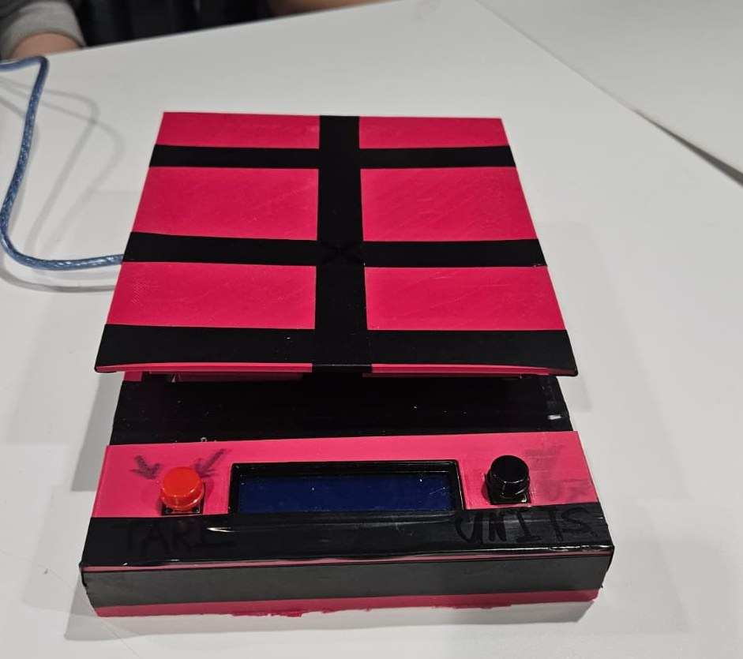
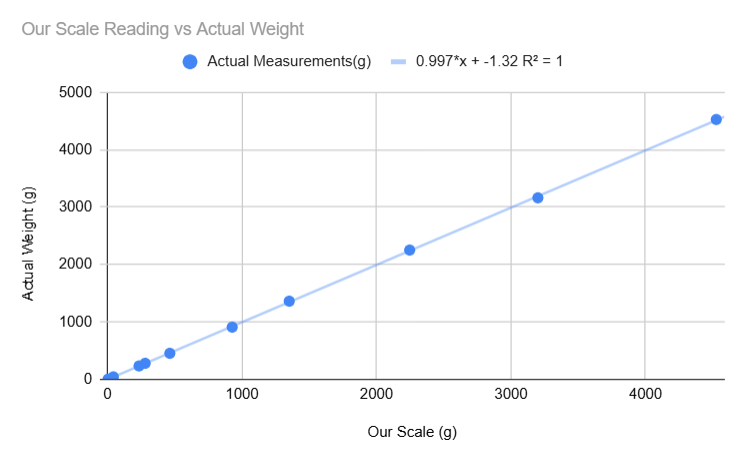
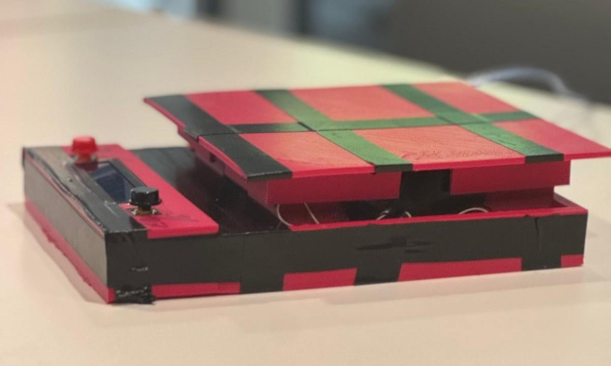
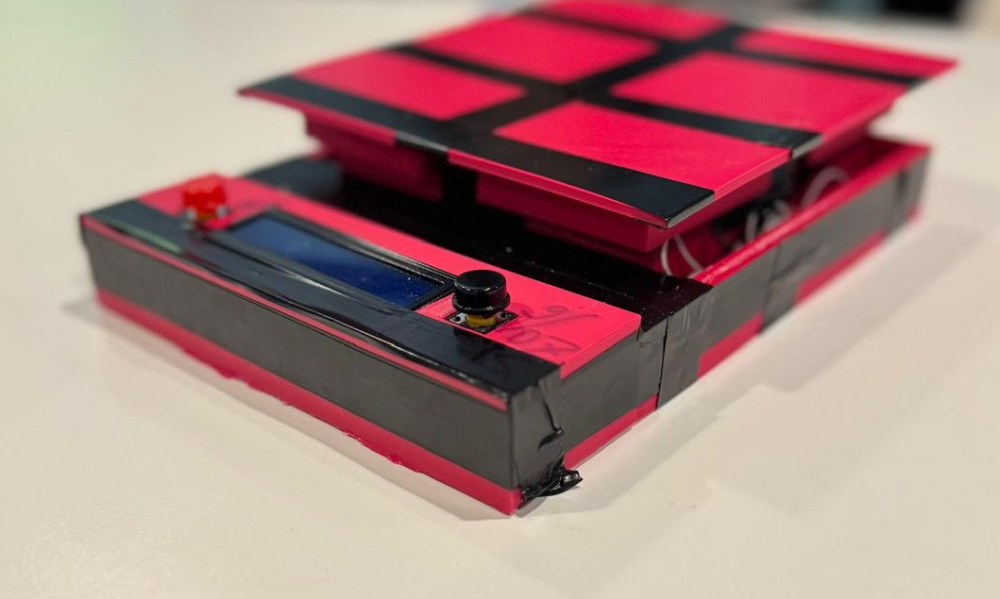
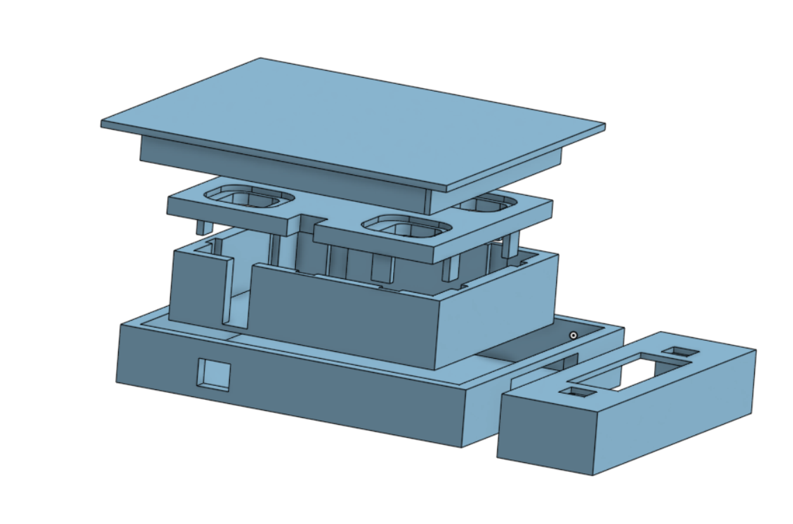
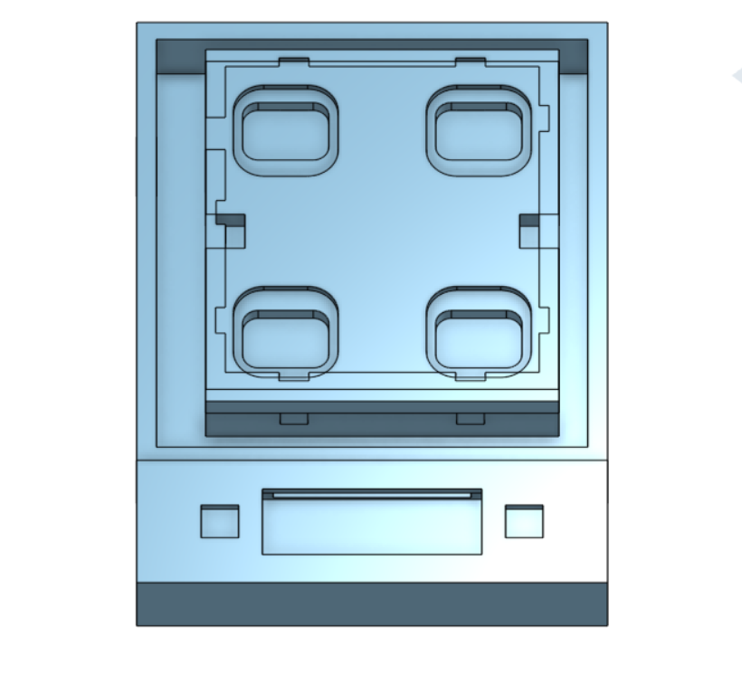
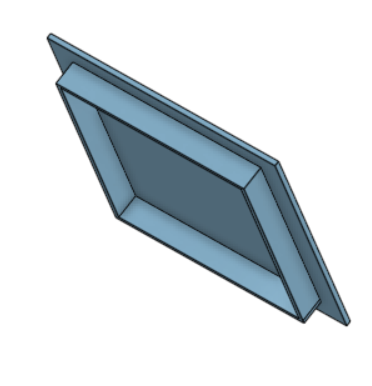
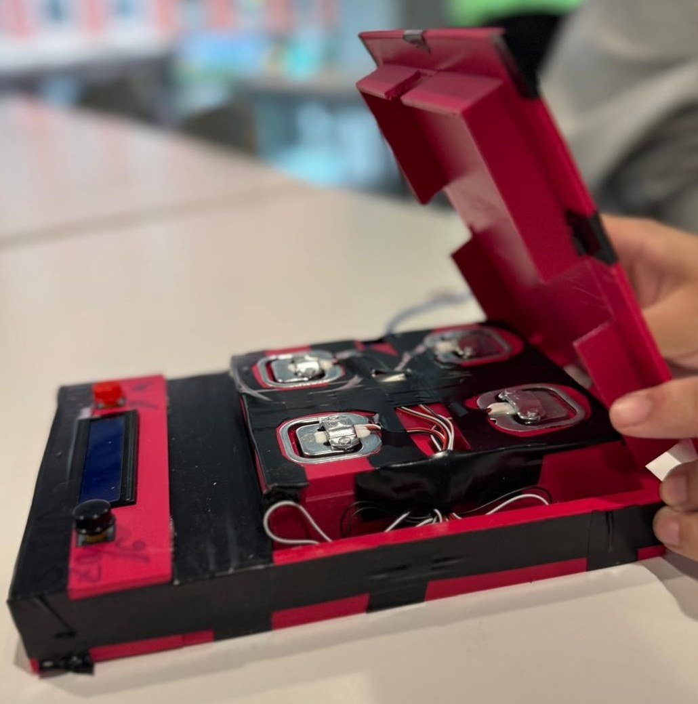
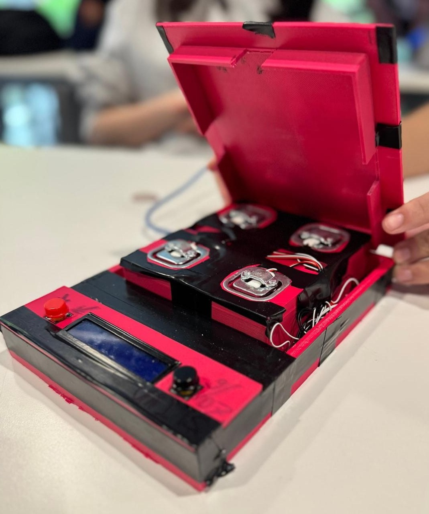
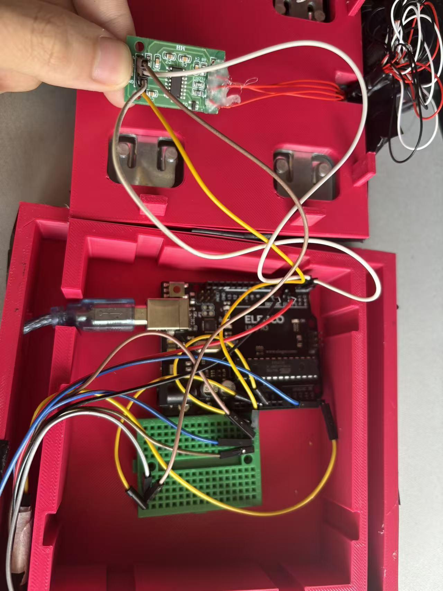

average error per reading, as a percent of each mass (ten masses, 4 g to 4526 g)
A digital scale built from four load cells, an HX711 amplifier and an Arduino, in a layered 3D-printed enclosure with an LCD, a tare button and gram/ounce switching.
My roleEnclosure design and the weighing code

Build a scale that reads true
The goal was to measure weight accurately in grams and ounces, with one button to tare and one to switch units. The team then tested maximum load, percent error, linearity and repeatability. Purchases beyond instructor-provided parts were capped at $30.
What testing showed
Across ten test masses, the largest miss was 38 g at 3162 g, against a 4535.9 g (10 lb) full scale.
average error per reading, as a percent of each mass (ten masses, 4 g to 4526 g)
R² of the linear fit, slope 0.997
standard deviation over 10 repeated readings
maximum tested load, capped to protect the printed platform

| Actual (g) | Scale (g) | Error |
|---|---|---|
| 4 | 3.9 | 2.50% |
| 44 | 43.2 | 1.82% |
| 234 | 234.1 | 0.04% |
| 280 | 279.8 | 0.07% |
| 454 | 463.1 | 2.00% |
| 910 | 926.9 | 1.86% |
| 1362 | 1351.2 | 0.79% |
| 2252 | 2246.7 | 0.24% |
| 3162 | 3200 | 1.20% |
| 4526 | 4526.7 | 0.02% |
Percent error was largest at the lowest masses (2.5% at 4 g), as expected when a small difference is divided by a small mass. The reading never fully settled, so each value was recorded at a reasonable stopping point; that drift shows up in the standard deviation. The scale was sensitive enough that moving air or a bump to the table changed the reading.
Enclosure design and the weighing code


Four layers, each with one job
The scale separates the weighing platform, the load cell support frame and the electronics into layers. This keeps the electronics protected from movement and load, and keeps the load cells aligned. A front box holds the LCD and buttons.





From weight to a number on the screen

Making the readings steady and usable
Each displayed weight is a fresh average of the latest batch of readings, about one update per second. A running average would look smoother, but it blends in old values. A fresh batch filters the noise and still responds as soon as the load changes.
Tiny readings show as 0.0, so an empty scale rests at zero instead of flickering around it.
A button press stores a new zero from a 30-sample average and clears the averaging data, so old readings never carry over.
Weight is always calculated in grams, then converted to ounces only for display. Button debouncing stops one press from counting twice.
If I rebuilt it